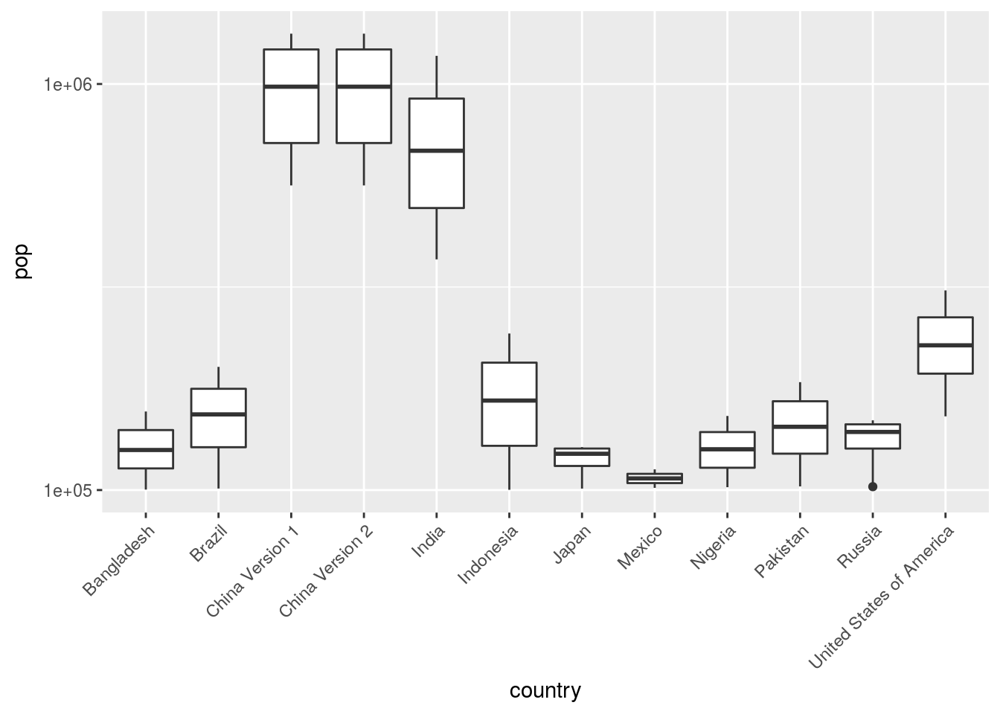

Chapter 4 Data Mining
4.1 Importer ou exporter des données
Ci-dessous il y a une liste de liens web, qui sont un bon point de départ pour rechercher des données de finance et d’économie :
- https://www.quandl.com/
- https://www.economicsnetwork.ac.uk/links/data_free
- http://www.quantmod.com/ (package R)
- https://www.economicsnetwork.ac.uk/links/data_free
- https://aws.amazon.com/fr/public-datasets/
- https://www.google.com/publicdata/directory
- https://trends.google.fr/trends/
- https://www.r-bloggers.com/financial-data-accessible-from-r-part-iii/
- https://www.rstudio.com/wp-content/uploads/2015/02/data-wrangling-cheatsheet.pdf
4.1.1 Format Texte
Il se peut que les données que vous essayez de télécharger et d’ouvrir sur R soient sous cette forme. Les fichiers sous format texte sont généralement des tableaux séparés par des espaces, virgules, des points virgules, des lettres etc…
## source Google trend sur le terme Blockchain
data_blockchain = read.table(file="data/BlockChain.txt",sep = " ",header=TRUE)
head(x = data_blockchain )## Mois blockchain
## 1 2004-01 0
## 2 2004-02 0
## 3 2004-03 0
## 4 2004-04 0
## 5 2004-05 0
## 6 2004-06 0Tracer la série temporelle en ggplot que vous venez d’importer
4.1.2 Format Csv
Le type de fichier appelé comma-separated values (CSV) stocke des données sous forme de colonnes de nombres et de textes séparées par des virgules. Chaque ligne du fichier est un enregistrement de données. Chaque ligne consiste en un ou plusieurs champs de données, séparés par des virgules, d’où le nom du format.
## source Google trend sur le terme Blockchain
data_BigData = read.csv(file="data/BigData.csv",header=TRUE)
head(data_BigData )## Catégorie...Toutes.les.catégories
## Mois Big data: (Dans tous les pays)
## 2004-01 8
## 2004-02 6
## 2004-03 7
## 2004-04 6
## 2004-05 6Dans cet exemple, le fichier ne possède pas le bon nom de colonne. Pour manipuler les noms des colonnes adéquates, il est nécessaire d’utiliser une option de la fonction read.csv.
Question :
Quelle est l’option, qui permet de passer des lignes dans le début de la lecture du fichier ?
## Mois Big.data...Dans.tous.les.pays.
## 1 2004-01 8
## 2 2004-02 6
## 3 2004-03 7
## 4 2004-04 6
## 5 2004-05 6
## 6 2004-06 7Tracer la série temporelle en ggplot que vous venez d’importer
4.1.3 Format excel
Le qui est très utilisé dans le monde professionnel est Excel. Ils sont plus difficile à lire que les autres avec le logiciel R.Il nécessite un paquet de R à installer.
## # A tibble: 6 × 2
## Date `Close Price`
## <chr> <dbl>
## 1 2010-07-18 00:00:00 0.09
## 2 2010-07-19 00:00:00 0.08
## 3 2010-07-20 00:00:00 0.07
## 4 2010-07-21 00:00:00 0.08
## 5 2010-07-22 00:00:00 0.05
## 6 2010-07-23 00:00:00 0.06Tracer la série temporelle en ggplot que vous venez d’importer
4.1.4 Html et webscraping
Le webscraping consiste à traduire de la page généralement codée en html d’un site web en données numérique comme dans l’exemple ci dessous. Ces techniques de web scraping demande une connaissance en code html et même dans certain cas des connaissances en java script.
library(rvest)
url='http://statbel.fgov.be/en/statistics/figures/economy/indicators/prix_prod_con/'
TAB=read_html(url)%>%html_nodes('td')%>%html_text()
NAMES=read_html(url)%>%html_nodes('th')%>%html_text()
M=data.frame(matrix(TAB,ncol=5,nrow=9,byrow=T))
M=cbind(NAMES[7:15],M)
names(M)=NAMES[1:6]4.2 Traiter vos données
Dans cette partie nous allons voir comment organiser nos données et les traiter. Nous avons appris comment les visualiser précédemment. Elles ne sont généralement pas dans une forme exploitable pour notre étude. Une des étapes importantes avant toute étude est de les organiser. Pour cela R dispose de paquets qui permettent de faciliter cette tâche. Nous allons découvrir la librairie dplyr. Généralement, nous voulons tout simplement créer une nouvelle variable, filtrer les données en fonction de certaines caractéristiques et connaître des métriques statistiques résumant nos échantillons.
Nous allons commencer par découvrir 6 fonctions du paquet dplyr, qui permettent de résoudre les classiques problèmes rencontrés lors de la manipulation de vos données.
- Filtrer les valeurs de vos échantillons en fonction de divers paramètres
filter - Sélectionner les colonnes
select() - Ordonner les lignes de votre data.frame
arrange(). - Créer de nouvelles variables en fonction de vos données
mutate() - Simplifier vos données en statistiques qui résument par divers métriques vos jeux de données
summarise()
Nous allons utiliser les données du Penn World Table qui permettent d’avoir le produit intérieur brut au cours du temps et dans différents pays. https://cran.r-project.org/web/packages/pwt/index.html
#install.packages(pwt)
library(pwt)## Package 'pwt' provides Penn World Table versions 5.6, 6.x, 7.x.
## For more recent versions see package 'pwt8' (or subsequent packages).Exercice 1
- Quelles sont les dimensions et le type de l’objet
pwt7.1?
4.2.1 Pourquoi utiliser dplyr ?
Les raisons pour lesquelles dplyr est intérressant à utiliser :
Efficace pour la manipulation des données et leurs traitements
Facile à comprendre et à lire grâce à la manière de coder
La rapidité des commandes
dplyrEtape incontournable de toutes études statistiques (certains parlent de 50% à 80% du temps de travail d’un datascientist consacré au datamining)
Exemple :
library(ggplot2)
data(pwt7.1)
ggplot(data=pwt7.1) + geom_line(aes(x=year , y=ppp,color=country))+guides(color=F)## Warning: Removed 2630 rows containing missing values (geom_path).
Le graphe d’au dessus n’est pas très visible. Il représente les séries temporelles par pays de l’observation depuis les années 50 de la parité de pouvoir d’achat (variable ppp de la data.frame pwt7.1). Les données du graphe ont besoin d’un traitement au préalable pour que le graphe soit plus pertinent. Les traitements effectués sur les données sont une partie inhérente au data mining.
4.2.2 filter()
filter() permet de sélectionner des observations en fonction de leurs valeurs ou caractéristiques. Le premier argument est le nom de votre data.frame. Le deuxième argument est un booléen (pour rappel TRUE ou FALSE), qui est le résultat des relations logiques pour filtrer les valeurs de votre data.frame.
Utilisation classique sous R :
pwt7.1[pwt7.1$country == "France" & pwt7.1$year >2000 , ]## country isocode year pop xrat currency ppp tcgdp
## FRA-2001 France FRA 2001 61479.30 1.117510 Euro 0.8947424 1671491
## FRA-2002 France FRA 2002 61828.99 1.062550 Euro 0.8967158 1720644
## FRA-2003 France FRA 2003 62171.39 0.886034 Euro 0.8946320 1774923
## FRA-2004 France FRA 2004 62534.16 0.805365 Euro 0.8863145 1867928
## FRA-2005 France FRA 2005 62911.52 0.804120 Euro 0.8744382 1964744
## FRA-2006 France FRA 2006 63292.51 0.797141 Euro 0.8676881 2072306
## FRA-2007 France FRA 2007 63681.74 0.730638 Euro 0.8586755 2197328
## FRA-2008 France FRA 2008 64057.79 0.682675 Euro 0.8505519 2272871
## FRA-2009 France FRA 2009 64420.07 0.719843 Euro 0.8440548 2238280
## FRA-2010 France FRA 2010 64768.39 0.755045 Euro 0.8472349 2281305
## cgdp cgdp2 cda2 cc cg ci p
## FRA-2001 27187.86 27191.38 26881.00 69.83545 6.906094 22.11699 80.06572
## FRA-2002 27829.07 27837.22 27410.60 70.28920 6.917705 21.26055 84.39281
## FRA-2003 28548.87 28583.43 28326.49 71.59628 6.941152 20.56368 100.97039
## FRA-2004 29870.52 29912.87 29791.32 70.89277 6.896153 21.80470 110.05128
## FRA-2005 31230.27 31290.86 31490.01 71.31478 6.875205 22.44646 108.74474
## FRA-2006 32741.73 32808.43 33153.25 71.00828 6.844822 23.19792 108.85001
## FRA-2007 34504.84 34559.96 35097.85 70.66513 6.825179 24.06608 117.52407
## FRA-2008 35481.58 35520.07 36271.90 71.34059 6.874723 23.90132 124.59104
## FRA-2009 34745.07 34734.71 35367.42 73.57137 7.360990 20.88920 117.25540
## FRA-2010 35222.51 35250.28 36082.29 73.85041 7.410363 21.09953 112.20985
## p2 pc pg pi openc y
## FRA-2001 79.71638 81.14159 98.93786 70.79320 55.58391 75.73611
## FRA-2002 83.98223 85.61586 104.61468 73.79742 53.48350 75.63022
## FRA-2003 100.39991 101.72032 123.88921 90.64287 50.92718 74.74381
## FRA-2004 109.34387 111.53888 136.09178 96.98921 51.88287 74.19543
## FRA-2005 107.98375 110.10664 133.73781 96.74696 53.35249 73.51346
## FRA-2006 108.05626 110.16195 132.28502 97.89343 55.09251 73.42715
## FRA-2007 116.72591 118.85091 139.84129 107.25933 55.26104 74.53116
## FRA-2008 123.75740 125.77477 147.48886 114.40983 56.00247 75.95152
## FRA-2009 116.66900 117.96453 138.50639 107.21521 48.49163 76.94224
## FRA-2010 111.44593 112.82410 132.32334 102.92026 53.27246 75.63581
## y2 rgdpl rgdpl2 rgdpch kc kg ki
## FRA-2001 75.74591 30028.62 30049.55 30036.83 70.03381 7.038954 22.00989
## FRA-2002 75.65237 30105.91 30157.42 30112.25 70.94396 7.015455 21.14531
## FRA-2003 74.83429 30213.19 30270.20 30218.62 71.63854 6.999233 21.03111
## FRA-2004 74.30063 30834.48 30857.78 30834.50 71.03727 6.971097 21.92968
## FRA-2005 73.65608 31230.27 31230.27 31230.27 71.31478 6.875205 22.44646
## FRA-2006 73.57673 31830.87 31808.08 31830.87 70.99265 6.775338 22.85073
## FRA-2007 74.65022 32399.71 32330.65 32403.34 70.90139 6.671340 23.90677
## FRA-2008 76.03392 32172.48 32116.39 32175.73 71.33719 6.741480 23.75086
## FRA-2009 76.91930 31012.11 31091.49 31011.97 74.02736 7.131338 20.96849
## FRA-2010 75.69544 31299.30 31377.41 31299.28 73.90334 7.132403 21.01475
## openk rgdpeqa rgdpwok rgdpl2wok rgdptt
## FRA-2001 51.28158 33151.56 65187.22 65214.82 30097.20
## FRA-2002 51.71185 33217.56 65209.92 65307.75 30301.74
## FRA-2003 51.10485 33315.65 65384.81 65496.41 30386.96
## FRA-2004 52.43385 33973.86 66813.94 66864.38 30941.21
## FRA-2005 53.62444 34391.00 67721.34 67721.34 31230.27
## FRA-2006 54.97286 35042.18 68860.35 68811.05 31694.99
## FRA-2007 55.79003 35668.67 70157.69 70000.32 32376.28
## FRA-2008 56.03421 35420.96 70105.34 69976.05 32083.50
## FRA-2009 51.09646 34146.36 67547.15 67720.36 31103.87
## FRA-2010 55.00765 34464.31 68386.06 68556.76 31203.40Avec dplyr
library(dplyr)
pwt7.1 %>% filter(country == "France" & year >2000)## country isocode year pop xrat currency ppp tcgdp
## 1 France FRA 2001 61479.30 1.117510 Euro 0.8947424 1671491
## 2 France FRA 2002 61828.99 1.062550 Euro 0.8967158 1720644
## 3 France FRA 2003 62171.39 0.886034 Euro 0.8946320 1774923
## 4 France FRA 2004 62534.16 0.805365 Euro 0.8863145 1867928
## 5 France FRA 2005 62911.52 0.804120 Euro 0.8744382 1964744
## 6 France FRA 2006 63292.51 0.797141 Euro 0.8676881 2072306
## 7 France FRA 2007 63681.74 0.730638 Euro 0.8586755 2197328
## 8 France FRA 2008 64057.79 0.682675 Euro 0.8505519 2272871
## 9 France FRA 2009 64420.07 0.719843 Euro 0.8440548 2238280
## 10 France FRA 2010 64768.39 0.755045 Euro 0.8472349 2281305
## cgdp cgdp2 cda2 cc cg ci p
## 1 27187.86 27191.38 26881.00 69.83545 6.906094 22.11699 80.06572
## 2 27829.07 27837.22 27410.60 70.28920 6.917705 21.26055 84.39281
## 3 28548.87 28583.43 28326.49 71.59628 6.941152 20.56368 100.97039
## 4 29870.52 29912.87 29791.32 70.89277 6.896153 21.80470 110.05128
## 5 31230.27 31290.86 31490.01 71.31478 6.875205 22.44646 108.74474
## 6 32741.73 32808.43 33153.25 71.00828 6.844822 23.19792 108.85001
## 7 34504.84 34559.96 35097.85 70.66513 6.825179 24.06608 117.52407
## 8 35481.58 35520.07 36271.90 71.34059 6.874723 23.90132 124.59104
## 9 34745.07 34734.71 35367.42 73.57137 7.360990 20.88920 117.25540
## 10 35222.51 35250.28 36082.29 73.85041 7.410363 21.09953 112.20985
## p2 pc pg pi openc y y2
## 1 79.71638 81.14159 98.93786 70.79320 55.58391 75.73611 75.74591
## 2 83.98223 85.61586 104.61468 73.79742 53.48350 75.63022 75.65237
## 3 100.39991 101.72032 123.88921 90.64287 50.92718 74.74381 74.83429
## 4 109.34387 111.53888 136.09178 96.98921 51.88287 74.19543 74.30063
## 5 107.98375 110.10664 133.73781 96.74696 53.35249 73.51346 73.65608
## 6 108.05626 110.16195 132.28502 97.89343 55.09251 73.42715 73.57673
## 7 116.72591 118.85091 139.84129 107.25933 55.26104 74.53116 74.65022
## 8 123.75740 125.77477 147.48886 114.40983 56.00247 75.95152 76.03392
## 9 116.66900 117.96453 138.50639 107.21521 48.49163 76.94224 76.91930
## 10 111.44593 112.82410 132.32334 102.92026 53.27246 75.63581 75.69544
## rgdpl rgdpl2 rgdpch kc kg ki openk rgdpeqa
## 1 30028.62 30049.55 30036.83 70.03381 7.038954 22.00989 51.28158 33151.56
## 2 30105.91 30157.42 30112.25 70.94396 7.015455 21.14531 51.71185 33217.56
## 3 30213.19 30270.20 30218.62 71.63854 6.999233 21.03111 51.10485 33315.65
## 4 30834.48 30857.78 30834.50 71.03727 6.971097 21.92968 52.43385 33973.86
## 5 31230.27 31230.27 31230.27 71.31478 6.875205 22.44646 53.62444 34391.00
## 6 31830.87 31808.08 31830.87 70.99265 6.775338 22.85073 54.97286 35042.18
## 7 32399.71 32330.65 32403.34 70.90139 6.671340 23.90677 55.79003 35668.67
## 8 32172.48 32116.39 32175.73 71.33719 6.741480 23.75086 56.03421 35420.96
## 9 31012.11 31091.49 31011.97 74.02736 7.131338 20.96849 51.09646 34146.36
## 10 31299.30 31377.41 31299.28 73.90334 7.132403 21.01475 55.00765 34464.31
## rgdpwok rgdpl2wok rgdptt
## 1 65187.22 65214.82 30097.20
## 2 65209.92 65307.75 30301.74
## 3 65384.81 65496.41 30386.96
## 4 66813.94 66864.38 30941.21
## 5 67721.34 67721.34 31230.27
## 6 68860.35 68811.05 31694.99
## 7 70157.69 70000.32 32376.28
## 8 70105.34 69976.05 32083.50
## 9 67547.15 67720.36 31103.87
## 10 68386.06 68556.76 31203.40# ou plus classique
filter(pwt7.1,country == "France" & year >2000)## country isocode year pop xrat currency ppp tcgdp
## 1 France FRA 2001 61479.30 1.117510 Euro 0.8947424 1671491
## 2 France FRA 2002 61828.99 1.062550 Euro 0.8967158 1720644
## 3 France FRA 2003 62171.39 0.886034 Euro 0.8946320 1774923
## 4 France FRA 2004 62534.16 0.805365 Euro 0.8863145 1867928
## 5 France FRA 2005 62911.52 0.804120 Euro 0.8744382 1964744
## 6 France FRA 2006 63292.51 0.797141 Euro 0.8676881 2072306
## 7 France FRA 2007 63681.74 0.730638 Euro 0.8586755 2197328
## 8 France FRA 2008 64057.79 0.682675 Euro 0.8505519 2272871
## 9 France FRA 2009 64420.07 0.719843 Euro 0.8440548 2238280
## 10 France FRA 2010 64768.39 0.755045 Euro 0.8472349 2281305
## cgdp cgdp2 cda2 cc cg ci p
## 1 27187.86 27191.38 26881.00 69.83545 6.906094 22.11699 80.06572
## 2 27829.07 27837.22 27410.60 70.28920 6.917705 21.26055 84.39281
## 3 28548.87 28583.43 28326.49 71.59628 6.941152 20.56368 100.97039
## 4 29870.52 29912.87 29791.32 70.89277 6.896153 21.80470 110.05128
## 5 31230.27 31290.86 31490.01 71.31478 6.875205 22.44646 108.74474
## 6 32741.73 32808.43 33153.25 71.00828 6.844822 23.19792 108.85001
## 7 34504.84 34559.96 35097.85 70.66513 6.825179 24.06608 117.52407
## 8 35481.58 35520.07 36271.90 71.34059 6.874723 23.90132 124.59104
## 9 34745.07 34734.71 35367.42 73.57137 7.360990 20.88920 117.25540
## 10 35222.51 35250.28 36082.29 73.85041 7.410363 21.09953 112.20985
## p2 pc pg pi openc y y2
## 1 79.71638 81.14159 98.93786 70.79320 55.58391 75.73611 75.74591
## 2 83.98223 85.61586 104.61468 73.79742 53.48350 75.63022 75.65237
## 3 100.39991 101.72032 123.88921 90.64287 50.92718 74.74381 74.83429
## 4 109.34387 111.53888 136.09178 96.98921 51.88287 74.19543 74.30063
## 5 107.98375 110.10664 133.73781 96.74696 53.35249 73.51346 73.65608
## 6 108.05626 110.16195 132.28502 97.89343 55.09251 73.42715 73.57673
## 7 116.72591 118.85091 139.84129 107.25933 55.26104 74.53116 74.65022
## 8 123.75740 125.77477 147.48886 114.40983 56.00247 75.95152 76.03392
## 9 116.66900 117.96453 138.50639 107.21521 48.49163 76.94224 76.91930
## 10 111.44593 112.82410 132.32334 102.92026 53.27246 75.63581 75.69544
## rgdpl rgdpl2 rgdpch kc kg ki openk rgdpeqa
## 1 30028.62 30049.55 30036.83 70.03381 7.038954 22.00989 51.28158 33151.56
## 2 30105.91 30157.42 30112.25 70.94396 7.015455 21.14531 51.71185 33217.56
## 3 30213.19 30270.20 30218.62 71.63854 6.999233 21.03111 51.10485 33315.65
## 4 30834.48 30857.78 30834.50 71.03727 6.971097 21.92968 52.43385 33973.86
## 5 31230.27 31230.27 31230.27 71.31478 6.875205 22.44646 53.62444 34391.00
## 6 31830.87 31808.08 31830.87 70.99265 6.775338 22.85073 54.97286 35042.18
## 7 32399.71 32330.65 32403.34 70.90139 6.671340 23.90677 55.79003 35668.67
## 8 32172.48 32116.39 32175.73 71.33719 6.741480 23.75086 56.03421 35420.96
## 9 31012.11 31091.49 31011.97 74.02736 7.131338 20.96849 51.09646 34146.36
## 10 31299.30 31377.41 31299.28 73.90334 7.132403 21.01475 55.00765 34464.31
## rgdpwok rgdpl2wok rgdptt
## 1 65187.22 65214.82 30097.20
## 2 65209.92 65307.75 30301.74
## 3 65384.81 65496.41 30386.96
## 4 66813.94 66864.38 30941.21
## 5 67721.34 67721.34 31230.27
## 6 68860.35 68811.05 31694.99
## 7 70157.69 70000.32 32376.28
## 8 70105.34 69976.05 32083.50
## 9 67547.15 67720.36 31103.87
## 10 68386.06 68556.76 31203.404.2.2.1 Rappels sur les opérateurs logiques
En plus de connaître les opérateurs de comparaison classiques (>, >=, <, <=, !=, et==), il est nécessaire de connaître un minimun les opérateurs logiques.
Les opérations logiques où x est le cercle de gauche et y celui de droite. La zone grise illustre le résultat de l’opération
4.2.2.2 Les données manquantes NA
La fonction filter() exclut les données, qui sont FALSE mais aussi les NA. Si vous souhaitez les garder, il faut explicitement le mentionner avec is.na()
filter(pwt7.1,country == "Afghanistan" & ppp >0.1)## country isocode year pop xrat currency ppp
## 1 Afghanistan AFG 1994 18287.71 0.4250999 Afghani 0.1456677
## 2 Afghanistan AFG 1995 19225.94 0.8333333 Afghani 0.2858570
## 3 Afghanistan AFG 1996 19864.65 2.5000225 Afghani 0.8612063
## 4 Afghanistan AFG 1997 20490.22 3.0000300 Afghani 1.0396686
## 5 Afghanistan AFG 1998 21132.12 3.0000525 Afghani 1.0464535
## 6 Afghanistan AFG 1999 21821.57 46.6195311 Afghani 15.7580666
## 7 Afghanistan AFG 2000 22020.95 47.3575747 Afghani 21.5065849
## 8 Afghanistan AFG 2001 22022.20 47.5000145 Afghani 22.7826618
## 9 Afghanistan AFG 2002 23050.74 47.2630000 Afghani 15.8984400
## 10 Afghanistan AFG 2003 24388.58 48.7627536 Afghani 15.6672382
## 11 Afghanistan AFG 2004 25001.34 47.8453125 Afghani 16.3465377
## 12 Afghanistan AFG 2005 25538.04 49.4945975 Afghani 17.0887683
## 13 Afghanistan AFG 2006 26235.21 49.9253308 Afghani 18.1290202
## 14 Afghanistan AFG 2007 26911.53 49.9620178 Afghani 18.8263812
## 15 Afghanistan AFG 2008 27658.89 50.2500123 Afghani 18.9155295
## 16 Afghanistan AFG 2009 28395.72 50.2333333 Afghani 19.0954558
## 17 Afghanistan AFG 2010 29121.29 46.4783333 Afghani 23.8140581
## tcgdp cgdp cgdp2 cda2 cc cg ci
## 1 6171.008 337.4402 357.9458 418.0962 84.64966 8.140324 24.01435
## 2 9434.496 490.7170 520.5918 626.3558 87.53356 8.327031 24.45552
## 3 9069.799 456.5799 483.7519 599.1693 90.59236 8.586088 24.68035
## 4 8703.699 424.7733 449.7798 573.1770 94.06810 9.132245 24.23468
## 5 8348.228 395.0492 417.6807 547.3798 97.69376 9.427623 23.93084
## 6 8046.974 368.7624 390.1225 524.9973 100.69842 9.683396 24.19061
## 7 7777.189 353.1722 374.3647 516.9093 103.50321 9.940586 24.63261
## 8 7548.503 342.7679 362.3935 505.8554 103.91261 10.141187 25.53355
## 9 12364.484 536.4028 568.0210 734.2712 99.83864 9.165623 20.26405
## 10 14894.967 610.7353 644.8455 938.7368 108.26260 10.666573 26.64629
## 11 16682.860 667.2787 717.8116 1020.1029 98.83641 12.773164 30.50334
## 12 19810.731 775.7341 813.4359 1163.3143 98.73730 15.303782 28.97134
## 13 22487.316 857.1426 906.5040 1248.9466 95.08500 15.698567 26.99261
## 14 26857.472 997.9912 1061.2579 1436.5821 92.71561 18.170592 24.47977
## 15 28662.534 1036.2864 1098.8628 1452.9744 92.79031 17.006386 22.42858
## 16 32855.670 1157.0643 1199.6876 1540.9918 92.75729 16.049876 19.64226
## 17 30594.202 1050.5787 1078.9042 1525.8294 104.22775 17.405445 19.79080
## p p2 pc pg pi openc y
## 1 34.26669 34.64211 40.20783 20.87283 19.60042 60.30097 1.2628969
## 2 34.30284 34.72005 40.30321 21.16303 19.40235 68.90959 1.7755402
## 3 34.44794 34.89860 40.45032 21.27547 19.44148 77.51820 1.5802052
## 4 34.65527 35.07703 40.48660 20.80226 20.05601 86.12682 1.3989120
## 5 34.88117 35.27092 40.48368 21.05689 20.58356 94.73544 1.2467217
## 6 33.80143 34.18707 39.26643 20.22781 19.86690 103.34405 1.1063395
## 7 45.41319 45.89177 52.85034 27.49527 26.39053 111.95267 1.0067514
## 8 47.96348 48.60775 55.91337 29.28857 28.34117 110.92146 0.9548346
## 9 33.63824 33.69133 38.40661 19.87328 19.31607 92.15672 1.4577656
## 10 32.12952 32.65043 37.45938 19.45660 19.55748 132.77983 1.5989665
## 11 34.16539 35.67589 42.58091 17.96619 19.49633 107.82782 1.6574545
## 12 34.52653 35.26125 37.81152 15.02983 37.26498 96.46660 1.8260133
## 13 36.31227 37.39979 38.77541 15.70017 44.15948 86.89906 1.9222423
## 14 37.68139 39.38283 41.23320 15.07349 47.07524 73.88006 2.1556814
## 15 37.64284 39.11531 40.98933 15.17595 46.34265 69.96848 2.2182649
## 16 38.01352 38.27806 42.05442 22.60387 33.94784 58.54041 2.5622950
## 17 51.23690 52.89882 45.62738 72.53946 68.50815 83.58889 2.2559824
## y2 rgdpl rgdpl2 rgdpch kc kg ki
## 1 1.339641 431.8470 443.2930 432.4810 82.67646 8.010209 22.38997
## 2 1.883635 619.0443 635.7064 619.8246 85.17006 8.256817 22.43223
## 3 1.674246 570.3823 586.0418 570.9475 87.65806 8.480753 22.47694
## 4 1.481266 527.1998 541.8857 527.5742 90.10163 8.722595 22.51833
## 5 1.318144 490.5893 504.3033 490.8766 92.47442 9.007833 22.55272
## 6 1.170423 453.9753 467.1788 454.2413 94.98377 9.132571 22.60945
## 7 1.067162 427.4116 439.8223 427.6500 97.28643 9.433899 22.64001
## 8 1.009505 406.1703 417.6921 406.4724 97.12978 9.634225 23.68402
## 9 1.543693 614.7943 632.7476 615.0989 95.11297 8.773441 19.02304
## 10 1.688270 703.8569 724.5717 704.6688 99.47435 9.876890 25.02503
## 11 1.782973 696.6012 706.8714 696.6976 97.93053 12.767608 30.33516
## 12 1.914760 775.7341 775.7341 775.7341 98.73730 15.303782 28.97134
## 13 2.032941 799.4455 794.9804 799.4455 99.08946 16.197197 27.71450
## 14 2.292339 894.2076 874.6509 894.1770 97.48816 18.613051 25.48428
## 15 2.352215 894.0372 879.0273 893.7143 97.51866 17.527417 23.42421
## 16 2.656683 1018.1215 1007.2068 1017.4956 94.67330 15.772571 20.00013
## 17 2.316808 1049.3561 1040.4424 1048.5992 92.79286 14.903953 17.53617
## openk rgdpeqa rgdpwok rgdpl2wok rgdptt
## 1 48.71891 561.0602 1663.160 1704.738 415.5417
## 2 55.35760 805.5154 2394.800 2456.162 591.8786
## 3 61.93692 743.9526 2212.107 2270.589 541.9669
## 4 68.44278 689.1886 2054.112 2109.834 497.9064
## 5 74.86147 642.9632 1920.317 1972.842 460.6032
## 6 81.29400 596.1641 1784.382 1835.204 423.7464
## 7 87.57229 562.5414 1702.706 1751.171 396.7107
## 8 86.06410 535.5935 1618.526 1663.201 376.0714
## 9 74.58082 808.5660 2447.145 2517.359 580.8702
## 10 101.30618 922.7164 2798.789 2877.839 643.0926
## 11 92.94931 910.0864 2754.977 2795.208 678.4057
## 12 90.07864 1010.8384 3052.306 3052.306 775.7341
## 13 85.20744 1038.7444 3134.798 3117.289 826.6138
## 14 76.57616 1158.8517 3485.032 3408.929 930.6425
## 15 76.27597 1155.4512 3452.745 3396.003 932.3537
## 16 66.93546 1311.0841 3901.608 3862.155 1040.4227
## 17 57.46605 1346.5908 3979.863 3948.905 934.2637Exercice 2
Sélectionner 5 pays d’Europe, les Etats-Unis, la Chine et l’Inde.
Sélectionner les pays au-dessus du quantile 95% de
tcgdppour l’année 2010 et refaire le graphe.Sélectionner les pays en-dessous du quantile 5% de
tcgdppour l’année 2010 et faire le graphe ci-dessous.

4.2.3 select()
Les fonctions de sélection d’un sous ensemble de données de votre échantillon en fonction des colonnes
Comme filter() qui sélectionne les lignes en fonction de lignes présentes dans vos données, select() permet de sélectionner les colonnes d’une data.frame.
head(pwt7.1[,c("year","pop")])## year pop
## AFG-1950 1950 8150.368
## AFG-1951 1951 8284.473
## AFG-1952 1952 8425.333
## AFG-1953 1953 8573.217
## AFG-1954 1954 8728.408
## AFG-1955 1955 8891.209pwt7.1 %>% select(year,pop,ppp) %>% head()## year pop ppp
## AFG-1950 1950 8150.368 NA
## AFG-1951 1951 8284.473 NA
## AFG-1952 1952 8425.333 NA
## AFG-1953 1953 8573.217 NA
## AFG-1954 1954 8728.408 NA
## AFG-1955 1955 8891.209 NANous ne sommes pas obligés d’utiliser le “pipe” %>%.Même, si je vous le conseille pour plus de clarté dans votre code.
head(select(pwt7.1 ,year,pop,ppp))## year pop ppp
## AFG-1950 1950 8150.368 NA
## AFG-1951 1951 8284.473 NA
## AFG-1952 1952 8425.333 NA
## AFG-1953 1953 8573.217 NA
## AFG-1954 1954 8728.408 NA
## AFG-1955 1955 8891.209 NAOn peut encore simplifier la ligne de code précédente.
head(select(pwt7.1 ,year:ppp))## year pop xrat currency ppp
## AFG-1950 1950 8150.368 NA <NA> NA
## AFG-1951 1951 8284.473 NA <NA> NA
## AFG-1952 1952 8425.333 NA <NA> NA
## AFG-1953 1953 8573.217 NA <NA> NA
## AFG-1954 1954 8728.408 NA <NA> NA
## AFG-1955 1955 8891.209 0.0168 Afghani NAou faire l’inverse
head(select(pwt7.1 ,-(year:ppp)))## country isocode tcgdp cgdp cgdp2 cda2 cc cg ci p p2 pc pg pi
## AFG-1950 Afghanistan AFG NA NA NA NA NA NA NA NA NA NA NA NA
## AFG-1951 Afghanistan AFG NA NA NA NA NA NA NA NA NA NA NA NA
## AFG-1952 Afghanistan AFG NA NA NA NA NA NA NA NA NA NA NA NA
## AFG-1953 Afghanistan AFG NA NA NA NA NA NA NA NA NA NA NA NA
## AFG-1954 Afghanistan AFG NA NA NA NA NA NA NA NA NA NA NA NA
## AFG-1955 Afghanistan AFG NA NA NA NA NA NA NA NA NA NA NA NA
## openc y y2 rgdpl rgdpl2 rgdpch kc kg ki openk rgdpeqa rgdpwok
## AFG-1950 NA NA NA NA NA NA NA NA NA NA NA NA
## AFG-1951 NA NA NA NA NA NA NA NA NA NA NA NA
## AFG-1952 NA NA NA NA NA NA NA NA NA NA NA NA
## AFG-1953 NA NA NA NA NA NA NA NA NA NA NA NA
## AFG-1954 NA NA NA NA NA NA NA NA NA NA NA NA
## AFG-1955 NA NA NA NA NA NA NA NA NA NA NA NA
## rgdpl2wok rgdptt
## AFG-1950 NA NA
## AFG-1951 NA NA
## AFG-1952 NA NA
## AFG-1953 NA NA
## AFG-1954 NA NA
## AFG-1955 NA NADe plus, il y a d’autres, que nous pouvons insérer dans cette fonction :
starts_with(“p”): sélectionne les noms des colonnes qui commence par p
ends_with (“p”): la même chose mais par la fin
contains(“abc”): les noms des colonnes doivent contenir “abc”
Exercice 3
Choisir les variables dans
pwt7.1qui contiennent “gdp”.Prendre les variables dans
pwt7.1qui commencent par “p.
4.2.4 arrange()
arrange() marche de la même manière que filter() mais la fonction change l’ordre des lignes de la data.frame.
Exemple :
# R classique
head(pwt7.1[order(pwt7.1$pop), c("pop", "year")])## pop year
## PLW-1950 7.251 1950
## PLW-1951 7.448 1951
## PLW-1952 7.651 1952
## PLW-1953 7.859 1953
## PLW-1954 8.073 1954
## PLW-1955 8.292 1955print("Début - Fin")## [1] "Début - Fin"tail(pwt7.1[order(pwt7.1$year), c("pop", "year")])## pop year
## VUT-2010 221.552 2010
## VEN-2010 27223.228 2010
## VNM-2010 89571.130 2010
## YEM-2010 23495.361 2010
## ZMB-2010 13460.305 2010
## ZWE-2010 11651.858 2010# dplyr
pwt7.1 %>%
select(pop,year) %>%
arrange(year) %>%head()## pop year
## 1 8150.368 1950
## 2 1227.156 1950
## 3 8892.718 1950
## 4 4117.617 1950
## 5 45.816 1950
## 6 17150.336 1950Exercice 4
- Sélectionner les valeurs pour la France de
cgdp,pppetyear. Recréer le graphe ci dessous ?
- Recréer le graphe ci dessous à l’aide du code de l’exercice 2.
df =pwt7.1 %>% filter( year == 2010) %>% filter(quantile(tcgdp,0.05,na.rm = T)> tcgdp )%>%
arrange(tcgdp)
ggplot(data=df) + geom_bar(aes(x=country , y=tcgdp,fill=country),stat="identity")+guides(color=F)+
theme(axis.text.x = element_text(angle = 45, hjust = 1)) +scale_x_discrete (limits =df$country )
4.2.5 mutate()
Les fonctions de création de nouvelles variables
La fonction mutate() est utilisé pour créer de nouvelle variable dans la data.frame.
# base R approach to create a new variable Speed (in mph)
pwt7.1$pop_percent <- pwt7.1$pop/mean(pwt7.1$pop)*100
head(pwt7.1$pop_percent)## [1] 28.37131 28.83813 29.32846 29.84324 30.38346 30.95017# dplyr approach (prints the new variable but does not store it)
pwt7.1 %>%
select(pop) %>%
mutate(pop_percent =pop/mean(pop,na.rm=T)*100) %>% head()## pop pop_percent
## 1 8150.368 28.37131
## 2 8284.473 28.83813
## 3 8425.333 29.32846
## 4 8573.217 29.84324
## 5 8728.408 30.38346
## 6 8891.209 30.950174.2.6 summarise()
Les fonctions de calcul de métriques stat
Nous allons calculer en fonction de variables groupées au préalable avec group_by() des statistiques (mean,max,min, …).
# base R
head(aggregate(x = pwt7.1$pop,by= list(pwt7.1$country), sd,na.rm=T))## Group.1 x
## 1 Afghanistan 5848.750668
## 2 Albania 672.475612
## 3 Algeria 8472.054402
## 4 Angola 2636.693920
## 5 Antigua and Barbuda 9.978749
## 6 Argentina 7355.045582# dplyr approach:
pwt7.1 %>%
group_by(country) %>%
summarise(sd_pop = sd(pop, na.rm=TRUE)) %>% head()## # A tibble: 6 × 2
## country sd_pop
## <fctr> <dbl>
## 1 Afghanistan 5848.750668
## 2 Albania 672.475612
## 3 Algeria 8472.054402
## 4 Angola 2636.693920
## 5 Antigua and Barbuda 9.978749
## 6 Argentina 7355.045582``` Nous pouvons ordonner ces résultats :
pwt7.1 %>%
group_by(country) %>%
summarise(sd_pop = sd(pop, na.rm=TRUE)) %>%
arrange(sd_pop) %>% tail(10)## # A tibble: 10 × 2
## country sd_pop
## <fctr> <dbl>
## 1 Mexico 26468.45
## 2 Bangladesh 34652.56
## 3 Nigeria 36477.95
## 4 Pakistan 44715.51
## 5 United States of America 45615.60
## 6 Brazil 45715.15
## 7 Indonesia 49789.04
## 8 India 246486.85
## 9 China Version 1 257096.90
## 10 China Version 2 257096.90Pour calculer des statistiques sur plusieurs variables, la fonction summarise_each est à utiliser.
pwt7.1 %>%
group_by(country) %>%
summarise_each(funs(mean(.,na.rm=T),sd(., na.rm=TRUE)), pop, ppp,tcgdp) %>% head()## # A tibble: 6 × 7
## country pop_mean ppp_mean tcgdp_mean pop_sd
## <fctr> <dbl> <dbl> <dbl> <dbl>
## 1 Afghanistan 15234.55869 5.5524263 11388.8892 5848.750668
## 2 Albania 2469.71454 23.8752038 8158.4529 672.475612
## 3 Algeria 20137.77244 14.4589328 76089.0551 8472.054402
## 4 Angola 7389.84857 15.2161872 18421.4477 2636.693920
## 5 Antigua and Barbuda 65.70082 1.6640378 624.5787 9.978749
## 6 Argentina 28754.70697 0.4321812 154526.3853 7355.045582
## # ... with 2 more variables: ppp_sd <dbl>, tcgdp_sd <dbl>4.2.7 Pour aller plus loin
- https://www.rstudio.com/wp-content/uploads/2015/02/data-wrangling-cheatsheet.pdf
- https://pages.rstudio.net/Webinar-Series-Recording-Essential-Tools-for-R.html
La fonction lag() :
pwt7.1 %>%
filter(country=="France") %>%
mutate(change = pop - lag(pop,n=1)) %>% select(change,year,country,pop) %>% head()## change year country pop
## 1 NA 1950 France 42517.69
## 2 344.159 1951 France 42861.85
## 3 321.720 1952 France 43183.57
## 4 311.461 1953 France 43495.03
## 5 326.544 1954 France 43821.57
## 6 396.283 1955 France 44217.86Exercice 5
Sélectionner 5 mesures de la data.frame
pwt7.1de façon aléatoire.Calculer les métriques d’une boîte à moustache pour chaque pays dans la data.frame
pwt7.1.(Max, Min, Median, IQR, quantile)
Pour rappel :
Schéma de la définition de la boîte à moustache de Rstudio
- Reproduire ce graphe avec la fonction
filter()
4.3 Chaîne de traitement
Nous allons dans l’exemple ci dessous voir un exemple de l’utilisation des commandes dplyr dans un cas réel que nous pourrons appeler chaîne de traitement et de visualisation des données de la librarie pwt introduites dans les exemples ci-dessus.
Charger les données de pays et des coordonnées de leur frontière.
library("ggplot2")
library("maps")
library(dplyr)
library(pwt)Recréer ce graphique à l’aide de filter() et de inner_join(). Le graphique montre le tcgdp de l’année 2010. La fonction inner_join() n’a pas été présenté pour l’instant. inner_join() permet de joindre deux data.frame en fonction de l’égalité des élements de deux variable de chaque data.frame
## Warning in inner_join_impl(x, y, by$x, by$y, suffix$x, suffix$y): joining
## factor and character vector, coercing into character vectorPourquoi manque-t-il des pays ? (Indice regarder le code R ci-dessous)
# base R
df$country[!unique(df$country) %in% unique(map$region)]## [1] Antigua and Barbuda China Version 1
## [3] China Version 2 Congo, Democratic Republic
## [5] Congo, Republic of Cote d'Ivoire
## [7] Gambia, The Hong Kong
## [9] Korea, Republic of Macao
## [11] Micronesia, Fed. Sts. Slovak Republic
## [13] St. Kitts & Nevis St. Lucia
## [15] St. Vincent & Grenadines Trinidad & Tobago
## [17] United Kingdom United States of America
## 190 Levels: Afghanistan Albania Algeria Angola ... Zimbabwe# dplyr
df %>% filter( !unique(country) %in% unique(map$region)) %>% select(country)## country
## 1 Antigua and Barbuda
## 2 China Version 1
## 3 China Version 2
## 4 Congo, Democratic Republic
## 5 Congo, Republic of
## 6 Cote d'Ivoire
## 7 Gambia, The
## 8 Hong Kong
## 9 Korea, Republic of
## 10 Macao
## 11 Micronesia, Fed. Sts.
## 12 Slovak Republic
## 13 St. Kitts & Nevis
## 14 St. Lucia
## 15 St. Vincent & Grenadines
## 16 Trinidad & Tobago
## 17 United Kingdom
## 18 United States of AmericaComment peut on résoudre ce problème ?
#install.packages("countrycode")
library("countrycode")
map$iso3c = countrycode(map$region, origin = "country.name","iso3c")## Warning in countrycode(map$region, origin = "country.name", "iso3c"): Some values were not matched unambiguously: Ascension Island, Azores, Barbuda, Bonaire, Canary Islands, Chagos Archipelago, Grenadines, Heard Island, Kosovo, Madeira Islands, Micronesia, Saba, Saint Martin, Siachen Glacier, Sint Eustatius, Virgin Islandsdf.map = inner_join(df, map, by = c("isocode" ="iso3c")) ## Warning in inner_join_impl(x, y, by$x, by$y, suffix$x, suffix$y): joining
## factor and character vector, coercing into character vectorp = ggplot(df.map, aes(x = long, y = lat, group = group, fill = (tcgdp)))
p + geom_polygon( color="black") +
coord_quickmap()
Ce n’est pas tout a fait ça encore. Il y encore des pays qui sont absent l’Allemagne, la république du Cango, et la république démocratique du Cango. Nous devons pour résoudre ce bug changer le nom du pays “à la main” pour faire fonctionner notre programme.
df$isocode = as.character(df$isocode)
germ = df %>% filter( country=="Germany") %>% transmute(isocode="DEU")
df[df$country=="Germany","isocode"]= germ[1,1]
congoR = df %>% filter( country=="Congo, Democratic Republic") %>% transmute(isocode="COD")
df[df$country=="Congo, Democratic Republic","isocode"]= congoR[1,1]
congo= df %>% filter( country=="Congo, Republic of") %>% transmute(isocode="COG")
df[df$country=="Congo, Republic of","isocode"]= congo[1,1]
df.map = inner_join(df, map, by = c("isocode" ="iso3c"))
p = ggplot(df.map, aes(x = long, y = lat, group = group, fill = (tcgdp)))
p + geom_polygon( color="black") +
coord_quickmap()
Recréer ce graphe ci-dessous à ’aide de la fonction filter.
Pour cela, il faut créer une autre variable “continent” à notre data.frame df.map, qu nous permettra de créer des panneaux différents en fonction.
df.map$continent = countrycode(df.map$region,
origin = "country.name", destination = "continent")